observ-vol-mgt: Observability Volume Manager
In today's dynamic computing landscape spanning centralized clouds, multi-cloud, and edge computing, the demand for adaptable observability is paramount. In particular, managing the escalating volume of observability data is crucial. With Observability Volume Manager we aim to address the complexities of dynamic observability data management by offering tailored processing capabilities to ensure efficient and effective observability across the entire computing infrastructure.
Overview
Observability Volume Manager provides a mechanism to perform various transformations on the observability data to manage the volume and support various edge deployment use cases. The current version of Observability Volume Manager presents a lightweight, automated, SQL-based metric processing system. It supports transformation of metrics defined in Prometheus format, where each metric comprises of metrics name and a set of labels in the form of key:value. We support multiple transformations of metrics which can be represented as a DAG.
[!NOTE] We support both Prometheus and OTel as the Metric collector at the edge locations.
Architecture: A Bird's Eye View

The diagram above illustrates the system architecture of Observability Volume Manager. The system components i.e Processor, Manager and Controller are deployed across the central cloud and edge locations:
Central Cloud location - The central cluster that is used to manage the edge clusters. - Can be an on-premise or cloud-based cluster. - There are no resources or network constraints expected in the core cluster. - There is a observability data aggregators (such as Prometheus, Thanos, Loki, etc.) running on the central cluster.
Single Cloud/Edge location - This is an edge environment where the user workloads are running. - The edge environment is expected to have moderate yet constrained compute resources and network. - There is observability data collectors (such as OTel, Prometheus, Vector, etc.) running on the edge environment that are sending the data to the aggregator in the central cluster.
Processor: Is deployed at the edge location. It intercepts the observability data collected by the collectors before it is pushed to the aggregators in the central cloud. The Processor facilitates diverse transformations like filtering, aggregation, and granularity adjustments on the observability data. Users can also apply combinations of these transformations, represented as a Directed Acyclic Graph (DAG).
Manager: is deployed at the central cloud location and is responsible for managing observability data transformations at the edge locations. It is a user-facing component with a REST interface to create/update/delete the rules that define the transformation DAGs to be enabled on a certain edge site(s) when some condition is met. The user can also specify default transformation DAGs for edge sites. The Manager coordinates with the processors to enforce transformation DAGs based on user-defined rules when conditions are satisfied.
Controller: is deployed at the central cloud location. It periodically analyzes the behavior of observability signals and correlating them with customer requirements and the usage of signals in the system. Utilizing this analysis, the Controller generates recommendations and can even automatically update rules in the manager to effectively manage and reduce observability data volume.
[!NOTE] The controller is currently under active development and is not integrated with the rest of the system in the current version. Therefore, it is not included in the Proof of Concept. However, future versions will integrate the controller with the rest of the system, and we will release an updated Proof of Concept accordingly.
Use Case
The main objective in the current version of Observability Volume Manager is to demonstrate centralized control and management of observability data across all connected edge environments from the core. Users can specify transformation DAGs for individual edge locations through rules, which define conditions based on metrics collected from these environments.
In upcoming versions, we plan to introduce a brain (controller) that will aid users by suggesting rules for managing observability data. This controller will possess the capability to communicate with the manager to automatically configure these rules, streamlining the process and enhancing user experience.
[!NOTE] The contrib folder holds various tools and scripts that helps to develop, build, and maintain the project. It also contains the docker compose to bring up all the components needed to run the proof of concept scenario locally.
Proof of Concept Walkthrough
We have created a video demonstrating the Proof of Concept in action. It can be accessed here.
Also, here is the documentation to replicate the Proof of Concept locally.

The diagram above illustrates our setup for the proof of concept.
We have two edge locations each equipped with a metric genrator, metric collector and the Processor. The metric generator produces app and cluster metrics, which are periodically scrapped by the metric collector and then transformed by the processor. The central cloud location runs the metric aggregator and the Manager. At the beginning of the proof of concept, the user specifies the two rules:
- Rule 1: Applies to Processor 1 and requests to filter (whitelist) only the app metrics when edge location 1 experiences network stress.
- Rule 2: Applies to Processor 2 and requests to increase the frequency of cluster metrics when edge location 2 encounters erroneous conditions.
The proof of concept is built to showcase two main capabilities of the Observability Volume Manager. 1. Automation: Users only define rules for managing observability data under different conditions and the Observability Volume Manager autonomously and dynamically monitors and enforces these transformations without requiring user intervention each time conditions are met. This eliminates the need for user intervention each time conditions are met, alleviating the burden of configuring individual processors at edge locations everytime. 2. Specificity: The Observability Volume Manager can enforce a transformation DAG on a subset of Edge locations. Additionally, within these edge locations, specific transformations can be applied to designated metrics only. This fine-granied control provides a level of specificity lacking in current observability systems.
More details on the proof of concept are explained here.